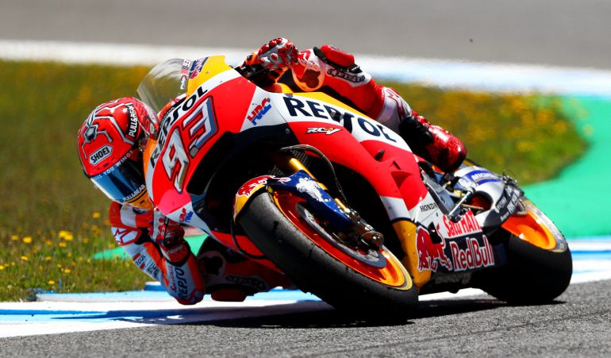
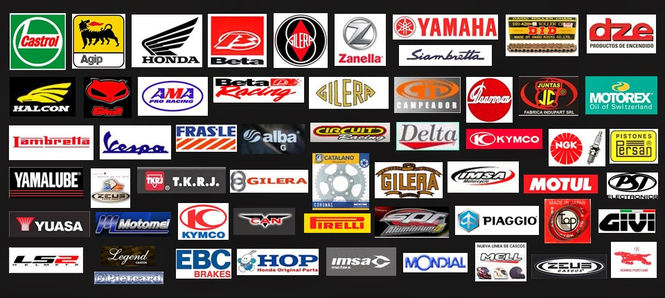
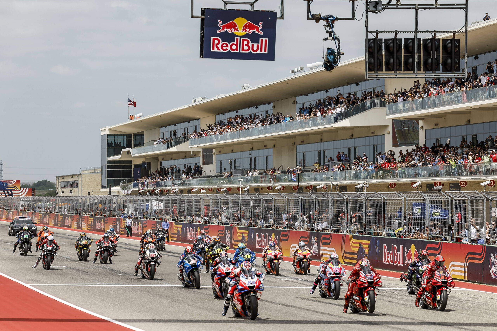
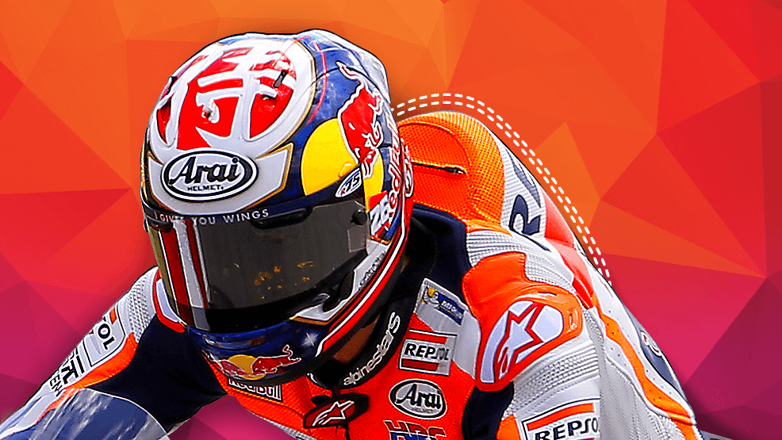
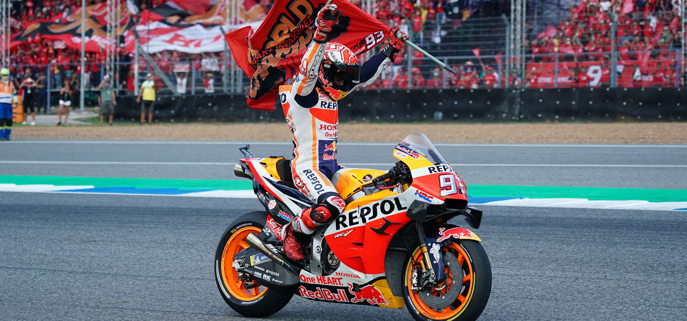

INICIO

MOTOS DEPORTIVAS
Las motos deportivas, también conocidas como superbikes, son la máxima expresión de la tecnología y la
velocidad en dos ruedas. Diseñadas para ofrecer el mejor rendimiento en pista, combinan motores potentes,
chasis ligeros y una aerodinámica avanzada que les permite alcanzar velocidades impresionantes y una agilidad
sin igual en las curvas.
Desde su popularización, estas máquinas han evolucionado para convertirse en símbolos de adrenalina y
precisión. No solo son herramientas de competición, sino también obras de ingeniería que fascinan a los
entusiastas de la velocidad. Con su carenado agresivo y su posición de conducción inclinada hacia adelante,
una moto deportiva no solo promete un viaje emocionante, sino que también representa la pasión por la
innovación y la búsqueda de los límites.
¿Alguna vez te has preguntado qué hay detrás de estas bestias de la velocidad? Esta página es tu guía
definitiva. Te invitamos a un viaje a través de las marcas más icónicas que construyen estas máquinas, a las
pistas legendarias donde nacen las leyendas, a conocer a los pilotos que desafiaron la gravedad y a las
protecciones esenciales que te mantendrán seguro. Descubre todo lo que necesitas saber sobre el fascinante
universo de las motos deportivas y déjate llevar por la adrenalina.
MARCAS

LAS MEJORES DEPORTIVAS
Detrás de cada moto deportiva icónica hay una historia de ingeniería, pasión por la velocidad y un legado de
competición. Estas marcas no solo fabrican motocicletas, sino que definen la dirección del diseño y la
tecnología en el mundo de las dos ruedas. A continuación, te presentamos a los gigantes del asfalto, las 8
marcas que han marcado un antes y un después en el segmento de las superbikes.
- Ducati (Italia): Con un legado inconfundible en la competición,
Ducati es sinónimo de diseño pasional y motores V-twin (o L-twin) de alto rendimiento.
Sus superbikes como la Panigale son conocidas por su electrónica avanzada y su carácter único.
- Honda (Japón): Un gigante de la industria, Honda ha producido algunas de las motos
deportivas más confiables y versátiles. Su serie CBR (como la Fireblade) ha dominado tanto en las calles
como en las pistas gracias a un equilibrio perfecto entre potencia y manejo.
- Kawasaki (Japón): Conocida por su búsqueda incansable de la potencia, Kawasaki ha roto
récords con modelos como la Ninja H2R, la primera moto de producción con compresor. Sus motos deportivas son
reconocidas por su rendimiento brutal y su estética agresiva.
- Yamaha (Japón): La YZF-R1 de Yamaha es una de las motos deportivas más emblemáticas,
inspirada directamente en la tecnología de MotoGP. La marca se destaca por su ingeniería innovadora,
especialmente en el desarrollo de sus motores crossplane, que ofrecen una entrega de potencia única.
- BMW Motorrad (Alemania): BMW irrumpió en el segmento deportivo con la S 1000 RR, una moto
que rápidamente se ganó un lugar entre las mejores. Su tecnología de punta, electrónica avanzada y motores
de cuatro cilindros en línea la han posicionado como una de las competidoras más serias.
- Aprilia (Italia): Con un gran éxito en la competición, Aprilia es conocida por sus motos
deportivas con un ADN 100% de carreras. Modelos como la RSV4 son aclamados por su chasis excepcional y su
capacidad para ofrecer un manejo de precisión quirúrgica.
- Suzuki (Japón): La serie GSX-R de Suzuki, apodada "Gixxer", tiene una base de fanáticos
muy leal. Estas motos son famosas por su motor suave pero potente y su excelente relación calidad-precio. La
GSX-R1000 ha sido una referencia durante décadas.
- MV Agusta (Italia): Un nombre que evoca tradición y exclusividad. Las motos de MV Agusta
son verdaderas obras de arte, con un diseño sofisticado y motores de tres y cuatro cilindros que producen un
sonido inconfundible. La F4 es un ícono del segmento.
PISTAS

Más allá de la ingeniería de las motos, la verdadera emoción reside en las pistas donde la velocidad y el
coraje se unen. Estos circuitos no son solo trazados de asfalto, sino campos de batalla donde se forjan
leyendas y se baten récords imposibles. A continuación, te llevamos a un recorrido por los circuitos más
icónicos y te presentamos a los pilotos que los han dominado, convirtiendo la adrenalina en arte.
Pistas Icónicas
- Isla de Man TT (Reino Unido): Más que una pista, es un circuito de 60.725 km que se
recorre por carreteras públicas. Considerado el evento de motociclismo más peligroso y desafiante del mundo.
Los pilotos compiten contra el reloj, rozando muros y casas a velocidades de más de 300 km/h. La TT es la
prueba máxima de coraje y habilidad.
- Circuito de Spa-Francorchamps (Bélgica): Famoso por su sección "Eau Rouge", esta pista es
una de las más desafiantes y espectaculares. Sus cambios de elevación y curvas rápidas la convierten en un
verdadero reto.
- Autodromo Internazionale del Mugello (Italia): Un circuito rápido y fluido en las colinas
de la Toscana. Conocido por su larga recta principal y sus curvas técnicas, es un favorito de los pilotos de
MotoGP.
- Circuito de Silverstone (Reino Unido): Un circuito histórico que ha sido testigo de
innumerables batallas. Con un diseño moderno, es rápido y ancho, lo que permite múltiples líneas de carrera.
- Twin Ring Motegi (Japón): Un trazado técnico y de frenadas fuertes. Es la pista local de
Honda y ha sido escenario de algunas de las carreras más memorables de la temporada.
Pilotos Icónicos
- Valentino Rossi (Italia): El "Doctor". Símbolo del motociclismo, su carisma y su talento
lo convirtieron en una leyenda. Nueve veces campeón del mundo.
- Marc Márquez (España): El "Alien". Conocido por su estilo de pilotaje agresivo y su
habilidad para salvar caídas imposibles. Seis títulos de MotoGP lo avalan como uno de los mejores de la
historia.
- Casey Stoner (Australia): Un talento natural que se retiró en la cima de su carrera. Sus
dos títulos de MotoGP son el reflejo de su habilidad innata para pilotar al límite.
- Giacomo Agostini (Italia): El piloto más laureado de la historia con 15 títulos
mundiales. Es una leyenda indiscutible del motociclismo.
- Joey Dunlop (Reino Unido): Conocido como "King of the Mountain" (Rey de la Montaña). Es
la leyenda de la Isla de Man TT, con un récord de 26 victorias en el evento, una hazaña que ha perdurado a
lo largo del tiempo.
PROTECCIONES

La seguridad es primordial, y el equipamiento adecuado es fundamental. Aquí tienes las mejores marcas y la
división que solicitas:
Marcas de Alta Gama (Circuito y Uso Diario)
- Dainese: Una de las marcas más icónicas. Ofrece trajes de cuero de alta tecnología, con
sistemas de airbag integrados (D-air) tanto para circuito como para la carretera. Sus diseños son elegantes
y funcionales.
- Alpinestars: Principal competidor de Dainese, Alpinestars es líder en tecnología de
protección. Sus productos, desde botas y guantes hasta trajes de cuero con airbag (Tech-Air), son utilizados
por los mejores pilotos del mundo.
Equipamiento para Circuito (Especializado)
- Trajes de Cuero de una pieza: Obligatorios en pista. Ofrecen la máxima protección en caso
de caída. Marcas como Spidi, Revit y Arai (para cascos) son referentes en este segmento.
- Cascos de Fibra de Carbono/Compuestos: Ofrecen la mejor combinación de ligereza y
resistencia. Marcas como Shoei, Arai y AGV son los estándares de la industria.
- Guantes de Competición: Hechos de cuero de canguro o de cabra para mayor sensibilidad y
protección. Con protecciones de nudillos y deslizadores de palma.
Equipamiento para el Día a Día (Versátil)
- Chaquetas y Pantalones de Cuero o Textil: Marcas como Macna, Held y Spidi ofrecen
chaquetas con protecciones homologadas y forros térmicos/impermeables.
- Cascos Modulares o Integrales: Dependiendo de la preferencia. Schuberth y Shoei tienen
excelentes opciones modulares, mientras que las marcas de competición también tienen modelos muy cómodos
para uso diario.
- Botas de Caña Alta: Protegen tobillos y espinillas. Modelos de TCX y Sidi ofrecen
comodidad y seguridad sin ser tan rígidas como las de circuito.
RECORDS

| Récord |
Piloto / Equipo |
Marca / Moto |
| Velocidad en el Puente Osman Gazi |
Kenan Sofuoğlu |
Kawasaki H2R |
| Lap más rápido en la Isla de Man TT |
Peter Hickman |
BMW S 1000 RR |
| Victoria 1000 de Honda en Motociclismo |
Cal Crutchlow |
Honda |
| Dominio de Giacomo Agostini |
Giacomo Agostini |
MV Agusta |
| Más victorias en MotoGP |
Valentino Rossi |
Yamaha / Honda |
| Salto sobre la Fuente de Las Vegas |
Robbie Maddison |
Honda CRF450 |
| Vuelta más rápida en Nürburgring Nordschleife |
Andy Klockmann |
BMW M 1000 RR |
| Wheelie más rápido de la historia |
Ryan Suchanek |
Kawasaki Ninja ZX-10R |
| Mayor distancia en 24 horas |
Markus Schramm y Jan-Philipp Wagner (BMW Motorrad) |
BMW |